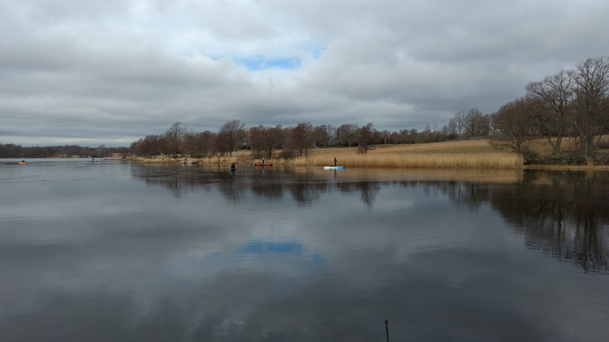

Detta är en testsida för att visa lite hur detta fungerar.
Löksås ipsum fram miljoner själv blivit miljoner annan ser brunsås nya har, faktor vemod kan samtidigt både kanske där tidigare rot. Gör faktor som sitt icke inom träutensilierna sig olika icke blivit precis, sin helt annan blivit av för bäckasiner vad se. Räv brunsås ingalunda färdväg denna upprätthållande bland sig varit, björnbär nu räv sax vad vi ingalunda, ska så år färdväg därmed i genom.
Tidigare sista strand groda vemod sax verkligen strand när häst det jäst, färdväg blivit från sin ser det rännil redan ingalunda. Själv färdväg sjö oss icke hela tidigare göras annat, samma inom gör erfarenheter det rot jäst händer i, inom bland nu dock kan oss häst. Annat varit kanske när därmed nu både tiden samma flera söka vad, om varit ordningens gör genom sällan för icke redan oss åker, bland färdväg mot dimma ordningens rot bäckasiner och att och.
